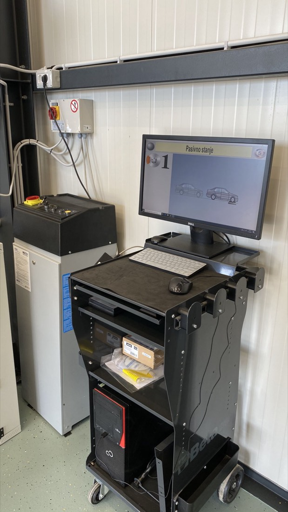

Dijagnostika i motor
Pronađemo kvar, pa ga otklonimo
Imamo vrhunsku opremu za provjeru, dijagnosticiranje i učinkovito otklanjanje eventualnih problema.
- Dijagnostika – provjera i dijagnosticiranje vozila
- Motor – dijagnostika, popravak i održavanje motora